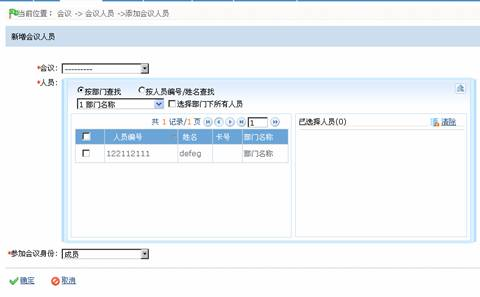
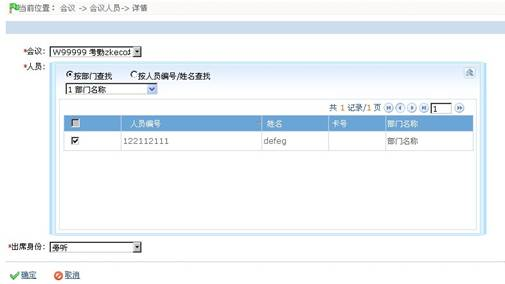
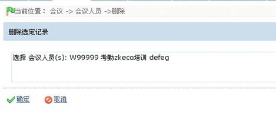

会议人员管理
1. 新增会议人员
（1）点击进入【会议】-【会议人员】-【新增】，显示新增会议室编辑页面；

各字段说明如下：
会议：点击 按钮，在下拉框中选择会议即可，如系统无会议，请参看会议管理，先进行会议添加；
按钮，在下拉框中选择会议即可，如系统无会议，请参看会议管理，先进行会议添加；
人员：指定参加本次会议的人员。可以通过两种方式来查找人员，如系统中无人员，请参看人员管理，先进行人员添加；
a、按部门选择查找。在下拉菜单的部门列表中部门前面有一个复选框，选中之后，则选中该部门的所有人员，如果勾选【选择部门下所有人员】，则该部门的所有人员将全部选择，并显示在当前所选人员列表框中；
b、按人员编号/姓名查找。在查询框中输入要选择人员的姓名或者工号，单击查询，将符合条件的人员显示在当前所选人员列表框中。
人员选择到当前所选人员列表框中，如果需要单独删除某一个或几个人时，只需要将该人员前面的勾选去掉即可。如果要全选或全不选列表中的人员时，勾选列表下方的“全选”。
（2）设置完成后，；若需保存，则单击【保存】；单击【取消】则放弃操作，并返回上一页面。
2.编辑会议人员
（1）在会议人员页面，单击会议会议所在行的相关操作下的【编辑】，即可进入该会议人员的编辑页面，如下图所示：

（2）用户可根据需要修改该会议，人员，出席身份，具体操作同新增会议资料一致，此处不再重述。
3. 删除会议人员
（1）在会议人员页面，单击会议所在行的选择框 ，打钩选中（可多选），然后单击【删除】按钮，或直接单击会议人员所在行的相关操作下的【删除】按钮，进入如下图所示页面：
，打钩选中（可多选），然后单击【删除】按钮，或直接单击会议人员所在行的相关操作下的【删除】按钮，进入如下图所示页面：

（2）单击【确定】按钮，则删除被选中的会议人员；单击【取消】按钮，则放弃操作并返回上一页面。